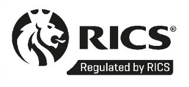
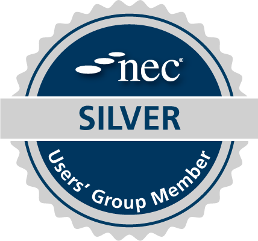

About iResolve
Professional consultancy. RICS-regulated standards. Client-side QS and Project Management delivered with a focused, senior and commercially sharp approach.
Who we are
iResolve is a professional, RICS-regulated consultancy providing integrated client-side Quantity Surveying and Project Management services for complex infrastructure projects.
We support strategic land developers and energy clients across the full project lifecycle from pre-contract strategy through to delivery and handover. Our approach combines rigorous commercial control with seamless project management during delivery, so that commercial risk and programme risk are managed together rather than in silos.
In practice, that means leading commercial strategy and procurement before contracts are signed, and dovetailing this with proactive Cost and Project Management during delivery, creating one coherent view of the client’s project risk profile, one point of accountability, and clear, consistent reporting.
Our positioning
We are not trying to be a large generalist consultancy. We operate in the same tradition as established client-side programme and commercial advisors, but with a tighter, more senior model built around real decision support and direct client access.
- Client-side only
- QS and PM as core twin services
- Commercially-led delivery thinking
- Board-safe reporting and recommendations
How we work
We aim to give clients clarity, control and confidence not just over cost, but over risk, programme, contracts and outcomes.
Professional credentials
RICS regulation and external memberships reinforce the consultancy standards behind our work.

